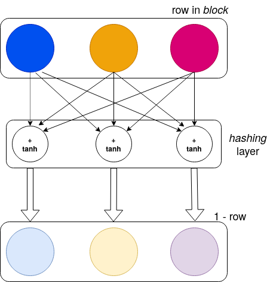

Hashing with Neural Network Weights
- 02 Dec 2020
- Manuel Capel
- Tags: deep learning
This articles presents a method for hashing strings based on the weights of an Artificial Neural Network trained on them.
Yesterday talking with one of my machine learning students Thomas Mathieu in Lewagon, we got an idea: what if the parameters of a machine learning model could somehow encode the data used to train this model? With nice properties on top of it? Let’s go back to the hash functions:
A hash function is a function taking an input and giving an output such that:
- it’s (nearly) impossible to find out the input from the output
- the output is of fixed size
- given an input, you get always the same output
Hash functions are used for example to keep passwords safe: their hash instead of their plain value is stored. When a user authenticates, his/her hashed password is compared against the stored hash. It’s also used as proof of work for mining crypto-currencies such as Bitcoin: simplified, the goal is to find a string which hash matches a given hash.
Now let explain our method and its implementation (in Python/Tensorflow/Keras):
Encoding
For each character, we take its integer encoding and modify it to map it in (0, 1):
1
t_char = lambda c: 1 / ord(c) ** (1 / 2)
This function takes a character c, then its ord() (integer bigger than 1 unique to each character), and finally the square root (for more contrast) of its inverse (to get a value in (0, 1)).
Then we simply define a function t_char() taking each character in a string s, transforming it with t_char and packing the result in a flat numpy array:
1
t_str = lambda s: np.array([t_char(c) for c in s])
As a last pre-processing step, we transform this numpy array as a block of given width, padding it with 0 to fill the block:
1
2
3
4
5
6
def to_blocks(arr, width=6):
size = np.ceil(arr.shape[0] / width).astype('int')
res = np.zeros(size * width)
res[:arr.shape[0]] = arr
res = res.reshape((size, width))
return res
Training Neural Network
Usually, the primary use of a neural network is to provide results from inputs. For this, it computes internally its own parameters or weights during a training phase.
Here the trick is, we will train a neural network with the primary use of getting its weights. We won’t care about its output.
With the pre-processing above, we get a 2-dimensional array of fixed width from any given string. The goal of the neural network will be to train to compute 1-row from each row in this block.
But remember from the definition of a hash function, an input must map to a unique output. So we have to remove any source of randomness in the training of our neural network.
Let’s code it:
1
2
3
4
5
6
7
8
9
10
11
12
13
14
15
16
17
18
19
20
21
22
23
24
25
26
27
28
29
30
from tensorflow.keras.layers import Dense
from tensorflow.keras.models import Sequential
from tensorflow.keras.optimizers import Adam
from tensorflow.keras.initializers import Zeros, Ones
from tensorflow.keras.losses import MeanSquaredError
initializer_0 = Zeros()
model = Sequential()
model.add(Dense(LENGTH,
input_dim=LENGTH,
activation='tanh', use_bias=False,
kernel_initializer=initializer_0,
name='hashing'))
# very high learning rate => wrong input "far away"
learning_rate = 1
optimizer = Adam(learning_rate=learning_rate)
model.compile(loss=MeanSquaredError(),
optimizer=optimizer,
metrics=['mse'])
# `block` obtained from prior pre-processing
# `model` "learns" to map it to 1 - block
model.fit(block, 1 - block,
batch_size=blocked.shape[0],
epochs=100,
verbose=1)
# `hash` resulting from `hashing` layer after training
hash = model.get_layer('hashing')\
.get_weights()[0].flatten()
All sources of randomness have been removed from the definition and the training of the model:
- weights all initialized to 0 (with
initializer_0) batch_sizeset to the number of inputs in the training dataset (which is theblockobtained from the pre-processing)- bias removed from the
Denselayer
The activation function for the unique layer there is tanh, which has the property of having larger gradients on a larger interval, convenient here. Last but not least, the learning_rate has been set at a very high value, 1 vs. 1e-3 usually. The purpose of it is to “push away” quite far wrong inputs.
Finally, we take the weights of the hashing resulting from the fit() (training) as a hash. It has dimension width x width, no matter how high the block was (means how long the initial string was).
Visually, the weights on the hashing layer correspond to this:

Each thin arrow on the top corresponds to a weight trained with fit(). Three cells here in the hashing layer correspond to a block of width 3. The values on the row are multiplied, for each cell in the hashing layer, by a value attached to each arrow pointing to it (a.k.a. the weights), then summed, and the tanh of this sum is forwarded below. At the end of the training, those weights form the hash of the initial string. Thus it is a hash of size 3x3=9
Checking that an input string matches a hash is pretty straight-forward: pre-process it, train the model with the resulting block, check that the hash matches the resulting weights in the hashing layer.
Downside: it’s a bit long (0.8s on my notebook). This might also be an advantage, as someone who found such a hash will barely be able to test thousands of strings per second against it (besides bearing high GPU costs…)
Why it’s possibly a good hash function
I am not myself a crypto expert, I must confess. Just a few remarks:
- a small difference in the input causes a pretty much more consequent difference in the output due to the gradient (used to adapt the weights during the training through backpropagation) pointing in another direction, and the very high learning rate pushing then far in that other direction.
- It looks (to me at least…) quite difficult to revert the computation in order to obtain the initial hash. It would imply solving a system of equation combining variable with a
tanhfunction of them where a small error would surely lead to another hash due to the 100 epochs in the training and the high learning rate. - It seems, empirically at least, to be resistant to small permutations or modifications in the input string
Conclusion
As I mentioned, I am not an expert in cryptography. If some experts could confirm or infirm this hashing function, I would be very grateful.
Moreover, this method is easily extensible: one can train the neural network to map to something else than 1- itself, one can try other activation function etc.
Thank you for reading!